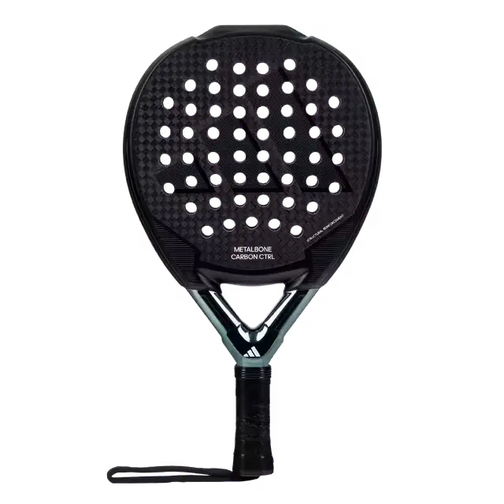
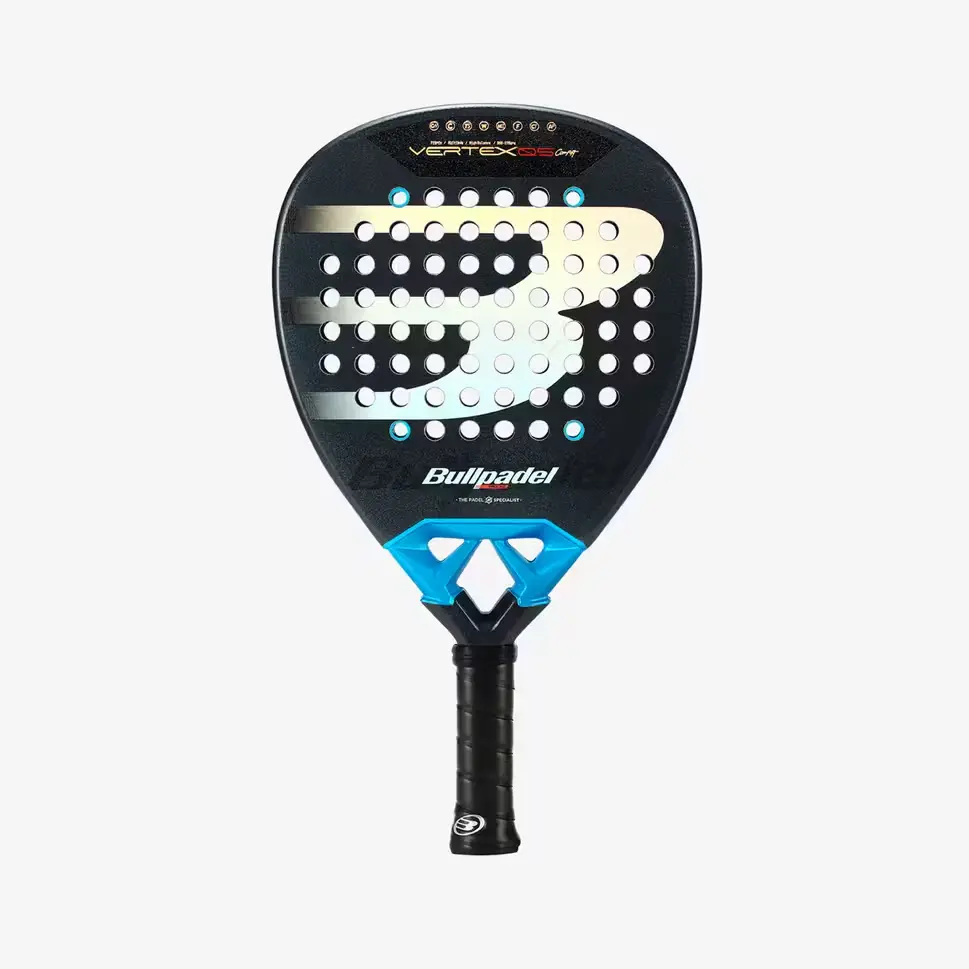
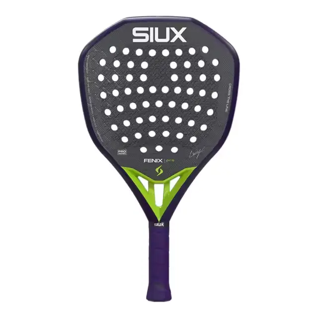
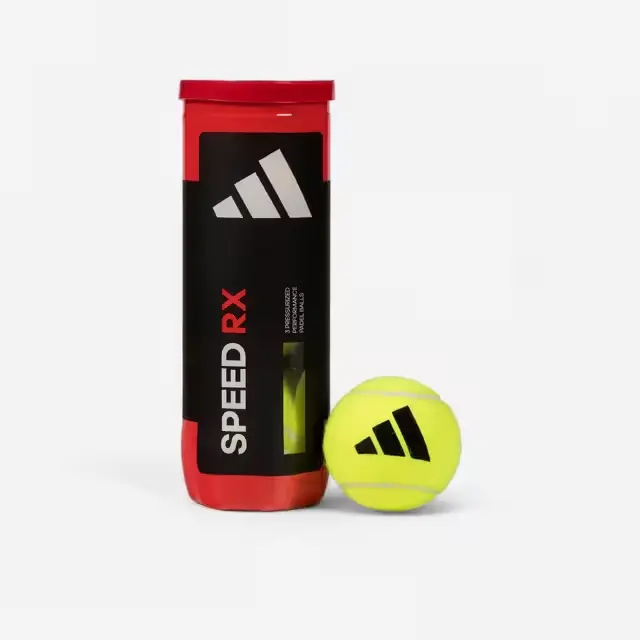
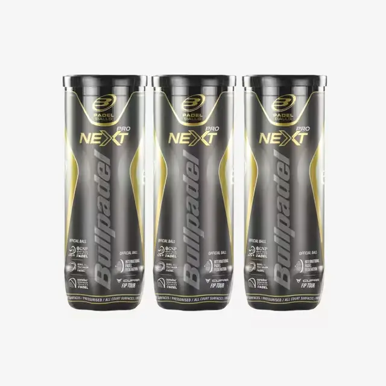
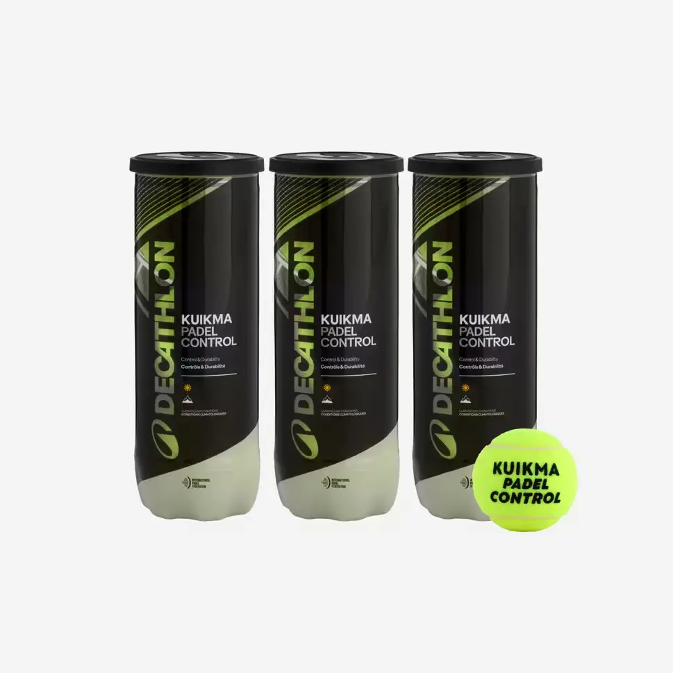
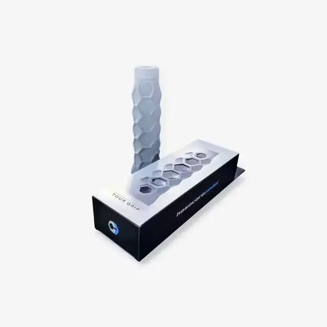
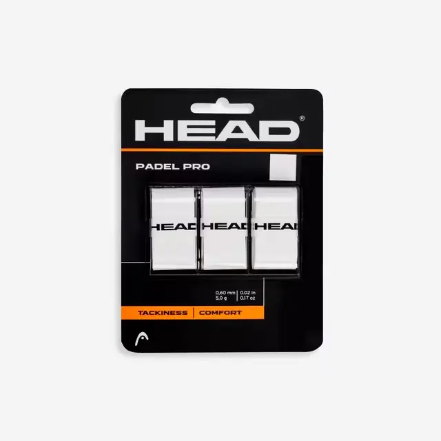
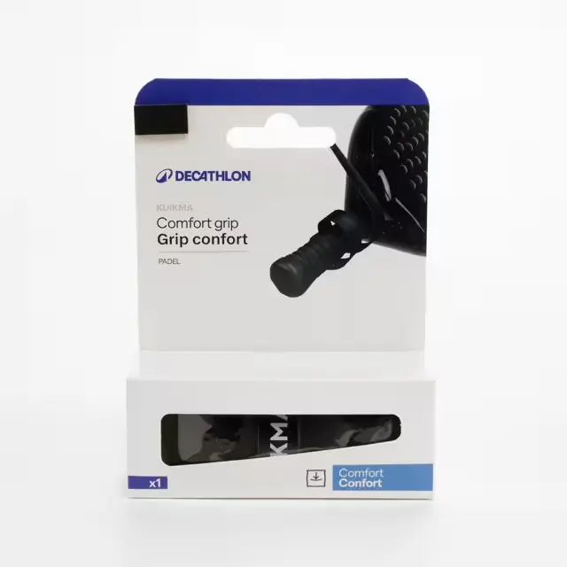

Adidas Metalbone Carbon Ctrl 3.3
Reedición 2024 de la línea Metalbone. Es un modelo orientado al control, en el que el carbono refuerza la estabilidad del golpeo.
199,95 €
Estas son las palas, pelotas y grips que tenemos en PadelPlus. Los precios son orientativos y sirven como ejemplo para esta web.

Reedición 2024 de la línea Metalbone. Es un modelo orientado al control, en el que el carbono refuerza la estabilidad del golpeo.
199,95 €

Pala de alto rendimiento pensada para jugadores avanzados que buscan potencia máxima con un tacto confortable y menor vibración.
249,95 €189,95 €

Modelo oficial de Leo Augsburger con diseño Glow Purple, concebida para un juego ofensivo y remates definitivos.
239,95 €

Tubo de tres pelotas presurizadas diseñadas para un juego rápido, con goma de alta densidad y rebote uniforme.
5,95 €

Tripack de pelotas oficiales de la Federación Internacional de Pádel, reconocidas por su resistencia y tacto firme.
14,95 €

Bote de tres pelotas concebidas para un excelente control de trayectoria en cada punto y gran durabilidad en entrenamientos.
4,95 €

Grip innovador con estructura de panel de abeja que reduce vibraciones musculares y mejora el agarre natural de la mano.
17,95 €

Overgrip con superficie microperforada de alta absorción que asegura un contacto seco y máxima sensibilidad en el golpeo.
6,50 €

Grip acolchado en color negro que proporciona un agarre suave, cómodo y una óptima amortiguación en el puño de la pala.
3,50 €
Todas las imágenes utilizadas en este proyecto han sido recopiladas con fines educativos: